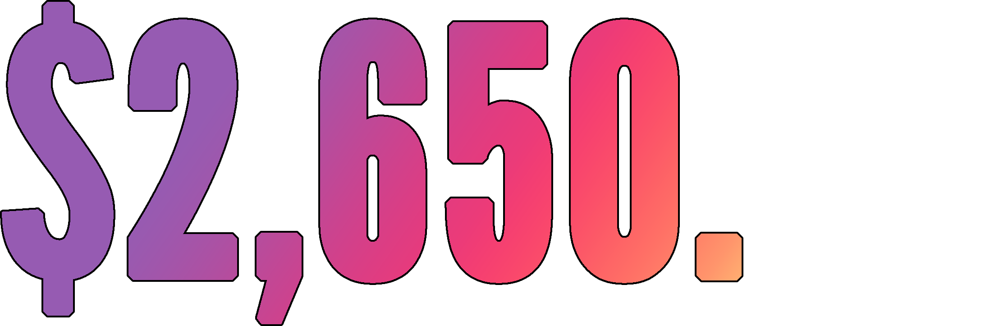
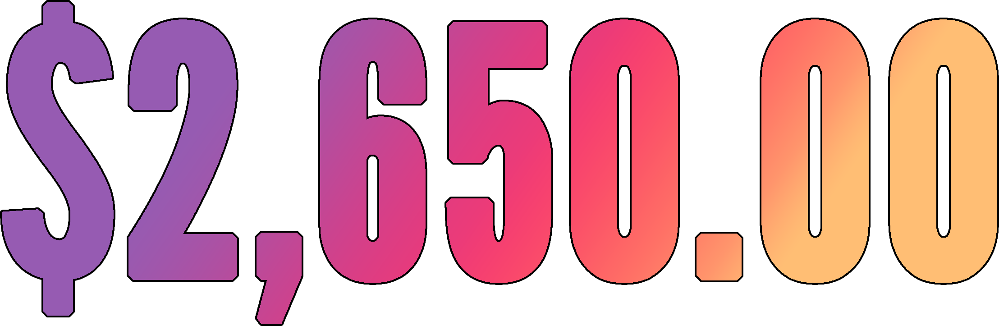
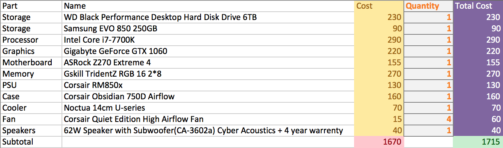

Custom Computers
A Short Summary
Custom built computers have many advantges.
- I can choose which parts to use.
- They can be more powerful than pre-assembled computers.
- Parts can be swapped at later times.
Care to elaborate?
Custom Parts
- By choosing what parts go into the computer, I can ensure it is able to do what I need it to do.
- I can choose parts that are more powerful than in pre-assembled computers.
- Certain parts can be changed with newer revisions at a later time, which helps keep it from being outdated.
How Much?
- I can contribute at least $150.00.
- From what I found, the tax rate is around 7%.
- The computer itself cost around $1,800.00.
- However, essential auxiliary parts like the screen and operating system increase the cost by around $1,000.00.
How Much Are You Asking For?

How Much Are You Asking For?
How Much Are You Asking For?

How Much Are You Asking For?

How Much Are You Asking For?

How Much Are You Asking For?

How Much Are You Asking For?
How Much Are You Asking For?
How Much Are You Asking For?

How Much Are You Asking For?
What Parts Go Into a Computer?
- Processor-The brain of a computer.
- Motherboard-The skeleton of a computer.
- Memory-Functions similarly to short-term memory.
- Storage-Functions similarly to long-term memory.
- Graphics Card-The eyes of a computer. Allows a computer to display anything.
- Speakers/Microphone-The ears of a computer.
What Parts Go Into a Computer? Pt. 2
- Case-The skin of a computer. Contains all components of a computer inside.
- Fan/Cooler-Keeps a computer from overheating.
- Display-Allows people to see things on a computer.
- Power Supply Unit-Provides electricity to the computer
- Mouse/Keyboard-Allows people to interact with a computer.
Financial Analysis
What are the auxiliary parts?
- Display-Allows someone to see things on a computer.
- Mouse and Keyboard-Allows someone to interact with a computer.
- Operating System-Software that allows a computer to do things like run applications.
- Tools for Assembly-Needed to build a computer.
- Cables-Needed to connect the computer to things such as the display.
Financial Analysis